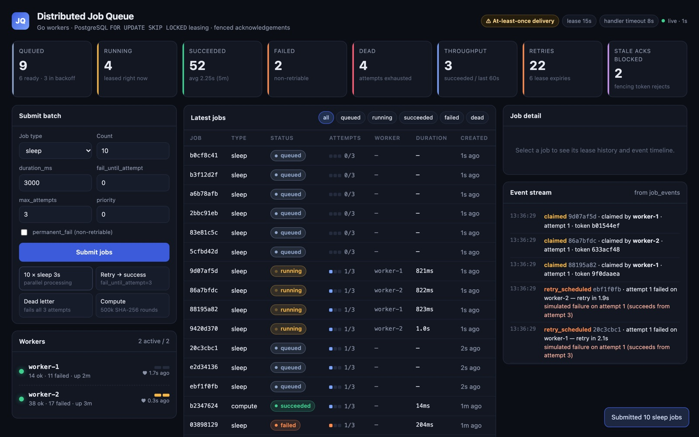
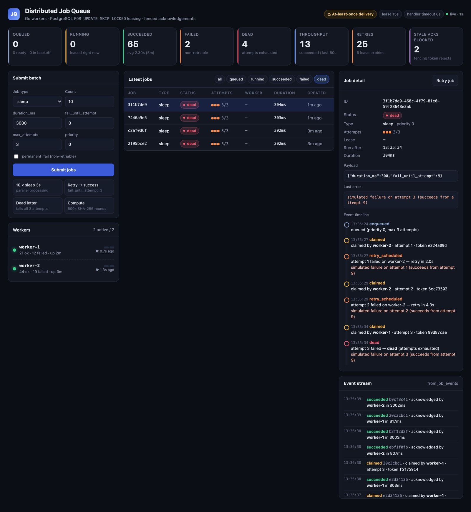

Go
GitHub ↗
Distributed Job Queue
Go · PostgreSQL · Docker
An HTTP API for typed background jobs and independently deployed Go workers. PostgreSQL is the only coordination point. Workers claim jobs with SELECT … FOR UPDATE SKIP LOCKED and hold a time-bound lease with a fencing token. If a worker is killed mid-job, another worker reclaims and finishes it.

- At-least-once delivery
- Leases + fencing tokens: a stale worker’s acknowledgement is rejected
- Retries with exponential backoff, then dead letter
- Integration test: 200 jobs × 12 concurrent claimers, zero duplicates
